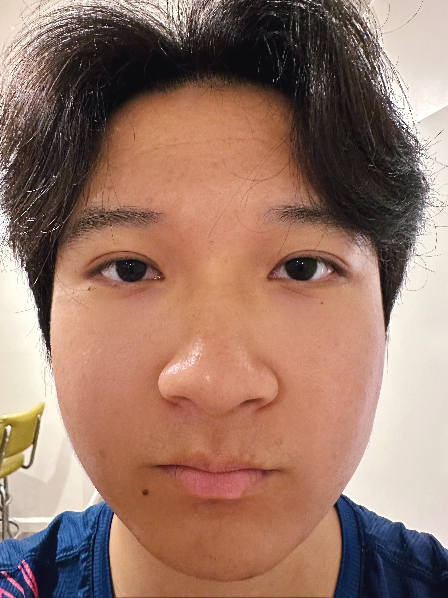

The following are two selfies taken at different focal length, while keeping the portion of face in the picture identical. It is apparent that in the one with short focal length the face is distorted. This is because with short focal length, the camera can capture wider range of scenery, and compress the scene within one image. However, the wide range scenery usually involves large distance difference between different items. For example, the nose is much more closer to the camera than the hair. The closer the items, the larger it appears in the image. So the one with short focal length will distort the face with nose being magnified and the surrounding of the face being shrunk.

24mm@50cm

13mm@15cm